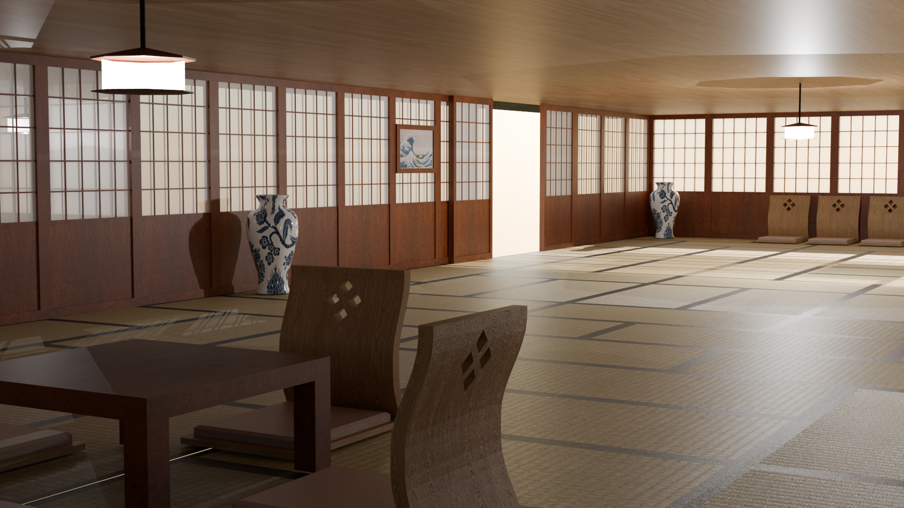

Back to Projects

Building Blocks
Interactive Visulaization - Creative Technology
Overview
Shown here are the results of my interactive visualization course I followed during module 2 of creative technology. We were tasked with creating a japanese inspired house, and a machine based on old Da Vinci blueprints.
